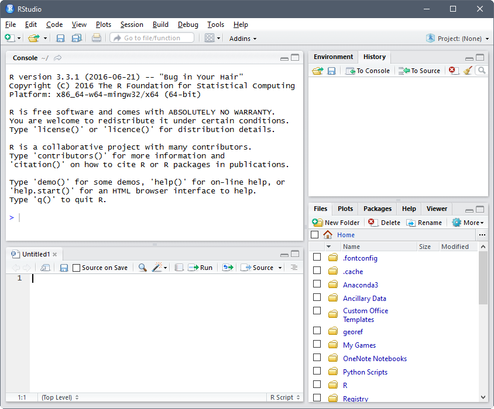
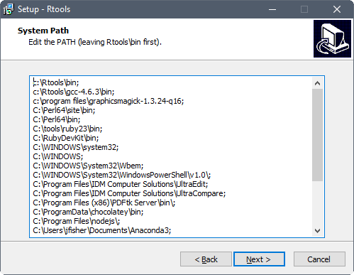

Software
Prior to the start of the workshop everyone bringing a computer will need to have had the software installed and tested. Below are the instructions for installing software used in this workshop. If you do not have install access to your computer, you will need to contact your IT representative to have them install it. You can give them a link to this page for instructions. These instructions are for installing software on a Windows 7 (or higher) operating system (OS).
R
R is a programming language and software environment for statistical computing and graphics. Download the latest binary distribution of R from the Comprehensive R Archive Network (CRAN). Once the installer downloads, double left-click the installation file. Accept default options on all but the following dialogs.
Set the location for the R installation to someplace you have write access, such as your “Documents” folder. This may already be the default if you’re installing as a standard user, without administrative privileges.

Customize startup options by specifying Yes (customized startup).

Set the R graphical user interface to operate with multiple top-level windows for the console, graphics and pager, by specifying SDI (separate windows).

Once installed, R should be accessible from the start menu or desktop shortcut. Assuming you installed R on a 64-bit OS, two versions of R are made available, that is, a 32-bit and 64-bit version. The 64-bit version of R (R x64) is preferred. Startup an R session. Once running the R Console should look something like this

R comes with a standard set of packages, these are collections of R functions, data, and compiled code in a well-defined format. Other user-contributed packages are available for download and installation. Install the following packages available from CRAN by pasting the following code in the R console and pressing Enter.
install.packages(c("inlmisc", "dataRetrieval", "lattice", "ggplot2", "colorspace",
"viridis", "animation", "sfsmisc", "devtools", "roxygen2",
"knitr", "xtable", "git2r", "rmarkdown"))Notepad++
If you don’t already have a favorite text editor (Notepad and Wordpad don’t count, UltraEdit does), download the latest 32-bit version of Notepad++. Once the installer downloads, right-click on it and select Run as administrator. Accept default options on all dialogs. Once installed, Notepad++ is accessible from Windows Explorer, right-click on a text file (such as an R source file [*.R]) and select Edit with Notepad++. Once running the file is opened in the text editor, it should look something like this

RStudio
Optional: RStudio is an integrated development environment (IDE) for R; it requires R to run. Download the latest free-license version of RStudio Desktop. Once the installer downloads, right-click on it and select Run as administrator. Accept default options on all dialogs. Once installed, RStudio should be accessible from the start menu. Startup an RStudio session, it should look something like this

RTools
Optional: RTools is a collection of resources for building packages for R. Download the latest “frozen” version of Rtools. Once the installer downloads, right-click on it and select Run as administrator. Accept default options on all but the following dialogs.
Select the additional task to edit the current value of the System Path.

Confirm that “c:\Rtools\bin” and “c:\Rtools\gcc-4.6.3\bin” (version number may differ) are located at the beginning of the System Path.

Once installed, check if Rtools can be accessed through R. Close the current R session (assuming you have it open) and open a new R session. Paste the following command into the R Console to see if Rtools is included in the System Path.
Sys.getenv("PATH")You should see “c:\\Rtools\\bin;c:\\Rtools\\gcc-4.6.3\\bin;…” in the output.
R functions that simplify common package development tasks are included in the devtools package.
MiKTeX
Optional: MiKTeX is an implementation of TeX/LaTeX and related programs for Windows. Download the latest 32-bit version of Basic MiKTeX. Once the installer downloads, right-click on it and select Run as administrator. Accept default options on all but the following dialogs.
Change the installation directory to “C:\miktex”, its been my experience that other locations can result in access errors.

Choose to install missing packages on-the-fly by specify Yes in the pull-down-menu.
Once installed, open the MiKTeX Settings application from the start menu, and select the Roots tab, it should look something like this
Push the Add… button and select the root directory for R’s LaTeX supplementary files. Your looking for the “texmf” folder within the R installation directory structure, mine is located here: “C:\Users\jfisher\Documents\R\R-3.3.1\share\texmf”.
R functions that let you write LaTeX documents are included in the knitr package.
Texmaker
Optional: Texmaker is a tool for developing documents with LaTeX. Download the latest 32-bit version of Texmaker for Windows. Once the installer downloads, right-click on it and select Run as administrator. Accept default options on all dialogs. Once installed, Texmaker should be accessible from the start menu or desktop shortcut. Startup a Texmaker session, it should look something like this

Select Configure Texmaker under the Options pull-down menu. For better or worse Texmaker commands are configured using best guesses for default paths. That is, no checks are made to ensure that these paths are correct. The only path you need to concern yourself with is located in the R Sweave entry. Check that the path to “R.exe” is correct, change as needed. In addition, configure the R Sweave entry to use the knitr R package, it should look something like this
"C:/Users/jfisher/Documents/R/R-3.3.1/bin/Rscript.exe" -e "knitr::knit('%.Rnw')"Next, click on the Quick Build button located on the left-hand-side of the Configure Texmaker dialog and specify to use the PdfLaTeX + Bib(la)tex + PdfLaTeX (x2) + View Pdf command.
The basic workflow is to open an R Sweave document (*.Rda) in Texmaker. Select R Sweave under the Tools pull-down menu; and if the process exits normally, press the Quick Build button to complete the conversion to a PDF document.
Ghostscript
Optional: Ghostscript is a Postscript and PDF interpreter/renderer. Download the latest 64-bit (or 32-bit) version of Ghostscript (AGPL release). Once the installer downloads, right-click on it and select Run as administrator. Manually edit the Windows system environment variables to include the Ghostscript bin directory (such as “C:\Program Files\gs\gs9.19\bin”) in the Path. The Ghostscript executable will then be accessible through R using the compactPDF function in the tools package (pre-installed with R).
Git
Optional: Git is a version control system that is used for software development and other version control tasks. Download the latest 64-bit (or 32-bit) version of Git for Windows. Once the installer downloads, right-click on it and select Run as administrator. Accept default options on all dialogs. Once installed, Git should be accessible from the start menu. Startup a Git Bash session, it should look something like this